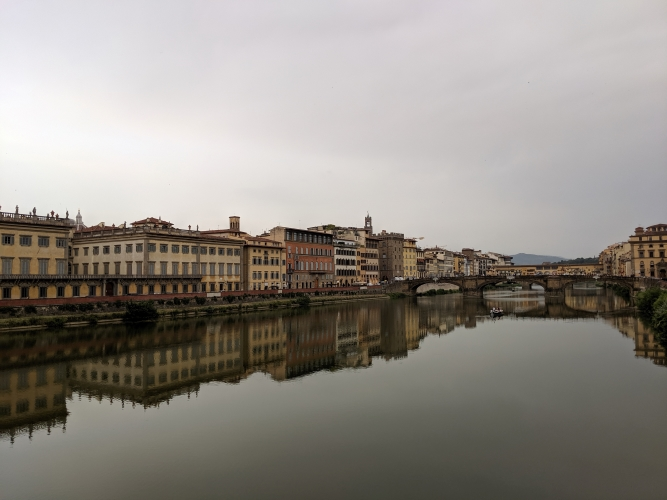
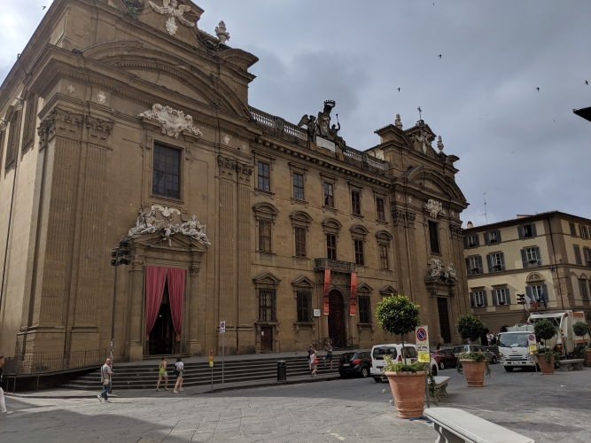
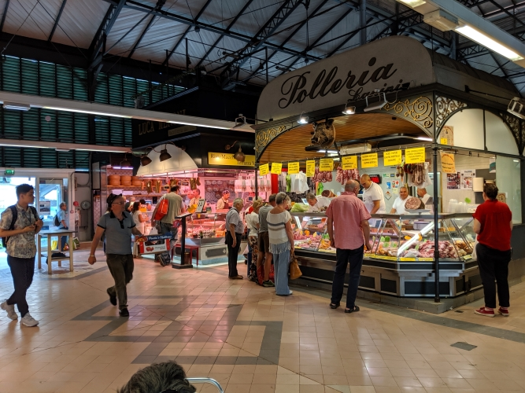
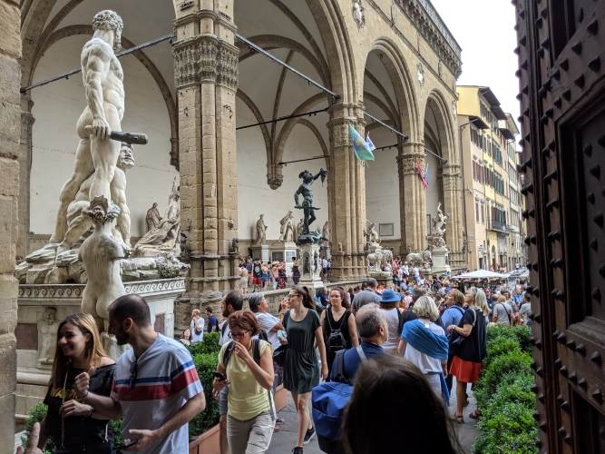
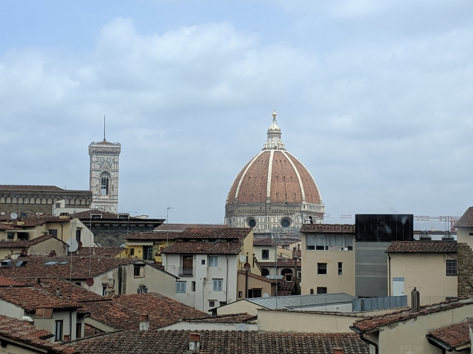
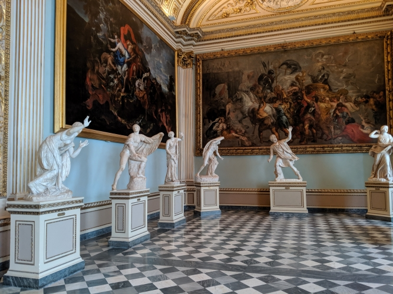
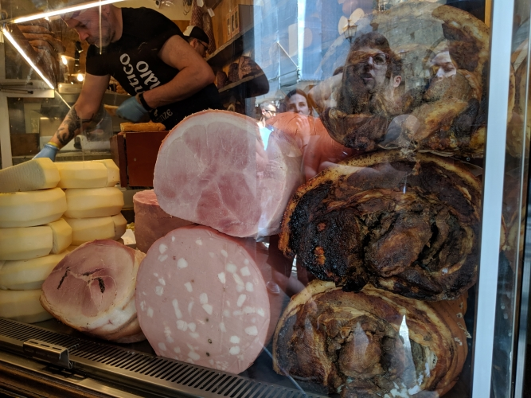
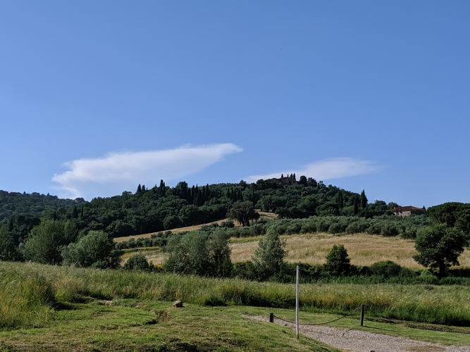
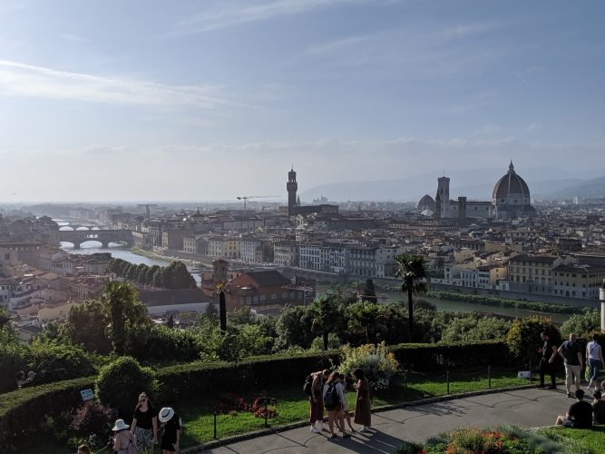

Florence was our first main hub while on our trip, and boy did we set the bar high. It was by far my favorite city
on the trip (and possibly the world) as it encomposses everything I love about Italy in such a perfect way.
Most know that the city embodies The Renaissance but you truly can't understand it until you've been there. From
the sights and sounds of the city to the conversations had with locals, our experience there was timeless. we
not only hit the usual spots while there, but we also went off the beaten path and had some experiences
we will never forget...

Looking over the Arno River towards the Ponte Vecchio on our first day

One of the many royal residences in Florence

A great indoor farmer's market we stumbled upon

The famous outdoor Renaissance sculpture gallery in Piazza della Signoria

View of the Duomo from the Uffizi gallery

The famous muses inside the Uffizi, luckily I got the picture with no tourists!

Looking at the meats and cheeses in a famous local sandwich shop

Quintissential view of Tuscany taken while on our off-roading excursion

World famous Florentine skyline as seen from Piazzale Michelangelo